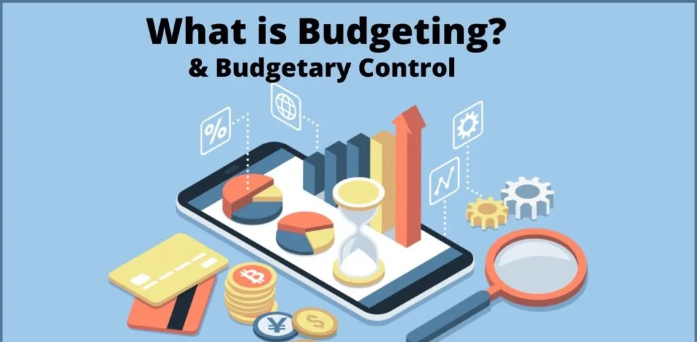
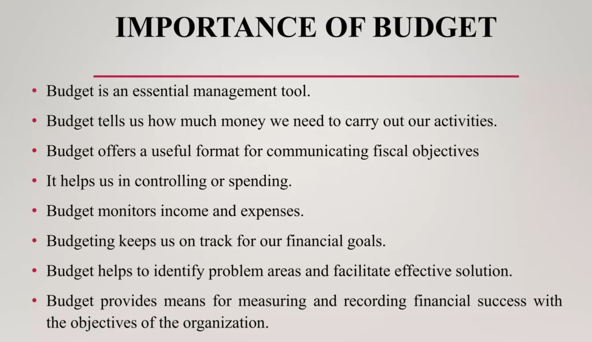
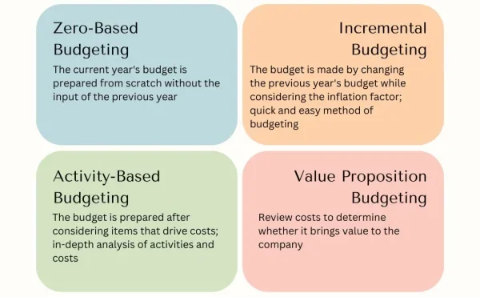
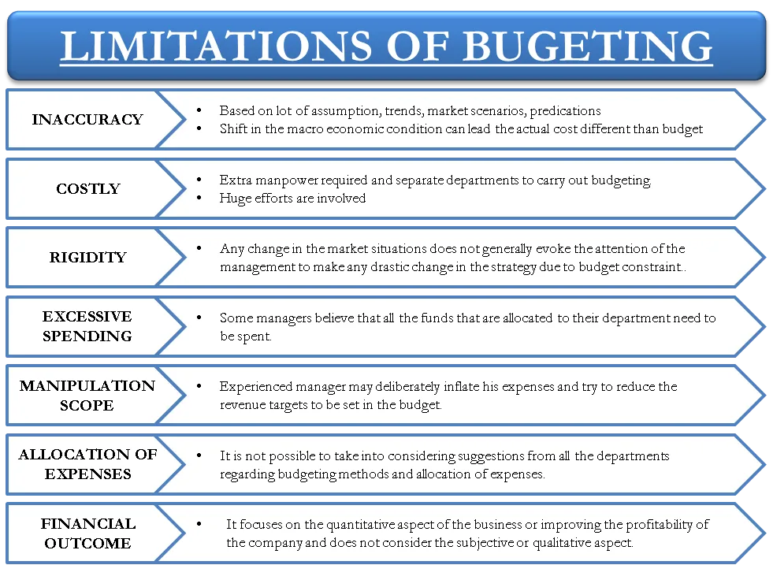

Expanded Nursing Uganda Explanation
Accountability should be reviewed through safe maternal and newborn assessment, early recognition of danger signs, respectful communication and timely referral. Connect the definition to vital signs, bleeding, fetal or newborn wellbeing, patient education and local protocol requirements.
Contents, 23 sections (tap to expand)
01 FINANCIAL MANAGEMENT
Financial management is balancing income and expenditure to ensure that available money is used appropriately to meet ongoing needs.
Financial management has three crucial aspects:
- Quantity : This means that there must be enough money to meet the organization/health facility needs regardless of other factors. This applies particularly to cash. It is not safe to have a large amount of cash at the health center as it may be stolen. For this reason, visible money is usually small in amount and is called “ Petty cash ”.
- Liquidity : Funds must be in the suitable form for the use for which they are intended. For Example diverting money meant for medicin e s to other expenditures in the health facility.
- Performance : Funds are allocated to the health facility based on its level of functionality and performance. For example: HCII, HCIII, HCIV and hospitals.
02 Importance of Financial Management at a Health Facility
Raising and Safeguarding Funds : Proper management of health facility revenue and expenditure includes raising and safeguarding funds to ensure that the facility has sufficient financial resources to operate effectively. This involves:
- Developing strategies to generate revenue from various sources, such as patient fees, insurance payments, government grants, and donations.
- Implementing efficient systems for collecting and recording revenue, including the use of receipts and electronic payment methods.
- Establishing secure storage facilities for cash and other financial assets to prevent theft or loss.
Efficient Resource Allocation : Effective management of revenue and expenditure allows health facilities to allocate their financial resources efficiently to optimize healthcare services. This involves:
- Prioritizing essential expenses, such as salaries, medical supplies, and equipment maintenance.
- Identifying areas where costs can be reduced or optimized without compromising the quality of care.
- Investing in cost-effective interventions and technologies to improve patient outcomes.
Community Access to Services : Proper financial management ensures that health facilities have the resources to provide essential health services to the community. This includes:
- Covering the costs of staff salaries, medical supplies, and equipment necessary to deliver healthcare services.
- Establishing affordable payment options for patients, including fee waivers and payment plans.
- Reaching out to underserved populations and providing access to healthcare services regardless of their ability to pay.
Informed Decision-Making: Effective management of revenue and expenditure provides health facility managers with accurate financial data to support informed decision-making. This includes:
- Regular financial reporting that tracks revenue, expenditure, and financial performance.
- Analysis of financial data to identify trends, forecast future needs, and make evidence-based decisions.
- Using financial information to plan for future investments and service expansions.
Trust and Confidence : Transparent and accountable financial management builds trust among health staff and the community. This involves:
- Maintaining accurate and up-to-date financial records.
- Regularly reporting financial information to stakeholders, including staff, patients, and the community.
- Addressing any concerns or questions about financial matters promptly and effectively.
Others include;
Ensuring Availability of Funds for Essential Purchases : Proper management ensures that sufficient funds are available to purchase high-priority items such as drugs, medical supplies, and equipment, which are essential for providing quality healthcare.
Preventing Financial Exhaustion : By managing revenue and expenditure effectively, health units can avoid running out of funds, which could lead to disruptions in healthcare services.
Tracking Expenses : Proper management allows health units to monitor how much they are spending on specific items, such as salaries, utilities, and maintenance. This information helps identify areas where costs can be optimized or reduced.
Determining Financial Status : Effective management provides a clear understanding of the health unit’s financial status, including the amount of money available at any given time. This information is essential for planning and decision-making.
Adhering to Budget: Proper management ensures that the health unit follows the approved budget in its spending, preventing unauthorized or excessive expenditures.
****
03 Financial Management Obligations for Managers
- Budget Preparation : Develops a financial plan outlining income and expenses.
- Financial Projections : Forecasts future financial needs and potential risks.
- Cost Analysis : Compares costs of services to identify areas for improvement.
- Reporting Compliance: Meets reporting requirements for donors and government agencies.
- Data-Driven Decisions : Utilizes financial reports to make informed decisions that enhance healthcare operations.
04 Process of Financial Management in a health facility
- Collecting Money and Issuing Receipts : All revenue received, such as patient fees, insurance payments, and donations, must be collected and documented with official receipts.
- Recording Exemptions and Debtors : If any patients are exempted from paying fees or receive credit, their exemptions or debts must be recorded accurately.
- Safeguarding Funds: Money collected should be kept securely at the health unit or deposited in a designated bank account.
- Recording Transactions: All revenue received and deposited, as well as any exemptions or debts, must be recorded in the cashbook and bank book.
- Verifying Bank Statements: Bank statements should be regularly reconciled with the bankbook to ensure accuracy and prevent discrepancies.
- Reconciling Records: The total amount of money recorded in the health unit’s registers should match the amount in receipts, debtors, and exemption books to ensure accountability and prevent fraud.
05 Sources of Health Financing
Health financing can be categorized into two main sources:
- Public Funding : Funds coming from central and local Government, including funds from Health Development partners (HDPs) channeled through central and local Government budget support mechanisms, and through project mechanisms.
- Private Funding : Funds coming from private or non-Government sources, including out-of-pocket payments (payment from a sick person or relative’s pocket) for health services, Insurance Prepayment scheme premiums, donations and projects and programmes funded and implemented by and through NGOs.
- Service Sectors Public Funding Sources Private Funding Sources
- Government Health – Government of Uganda. – Development partners. – Central budget support. – District Budget support. – Private wings. – NGO-supported projects and programs
- Private Services -Facility-based Private Not for Profit (PNFP) – Non-facility-based PNFPs – Private health practitioners – Traditional and complementary medicine practitioners – Govt subsidies or cost support to private facilities, including infrastructure development – Contractual arrangements with private providers – Participation in Govt-funded programs – Multilateral and bilateral projects and program channeled through central or local Govt. – Household (user fees) – Insurance (employer-based, community-based, national-based, and private) – Donations (internal and external) – Income-generating activities – Fundraising – Commercial marketing strategies – NGO-supported projects and programs
06 Primary Methods/Mechanisms of financing and funding health care systems
- Direct or Out-of-Pocket Payments: Individuals make direct payments for healthcare services as they are received. This method involves paying at the point of service delivery, often from personal funds.
- General Taxation from Formal and Informal Sectors : Funding is generated through general taxation, encompassing contributions from both the formal and informal sectors. Examples include income tax (e.g., pay as you earn) and taxes levied on businesses.
- Social Health Insurance : Citizens contribute compulsory premiums from their income, mandated by government law. In Uganda, this mechanism is currently under discussion, reflecting ongoing considerations about its implementation.
- Voluntary, Community, or Private Health Insurance: This method involves individuals or employers paying premiums to insurance agencies for healthcare coverage. Examples include private insurers like AAR and UAP. Additionally, community health insurance models exist, where community members pool resources to collectively cover health risks and expenses for members or dependents facing illness.
- Donations : Healthcare systems may receive support in the form of grants or loans from development partners. These external contributions, whether financial aid or loans, play a role in improving healthcare infrastructure and services.
07 BUDGETING AND BUDGET CONTROL
A budget is a quantitative statement, usually in monetary terms, of the plans and expectations of a defined area over a specific period of time . It addresses what to be done, where and when.
A budget is a financial statement which contains estimates of revenue and expenditure of an organization for a certain period of time in order to achieve predetermined objectives. .
A budget is a plan of how to spend a certain amount of money for a specified period . It involves allocation of available funds to prioritized items and activities.
Terms Related to Budgeting:
- Cost Centers : A cost center is a function within an organization that does not directly add to profit but still costs money to operate, such as accounting, HR, or IT departments.
- Profit : Profit refers to the financial gain or positive difference between revenues and expenses.
- Fixed Costs : Fixed costs are expenses that do not vary with the level of production or activity. These costs remain constant regardless of the volume of goods or services produced.
- Variable Costs : Variable costs fluctuate based on the level of production or activity. They increase as production volume increases and decrease as production volume decreases.
- Direct Costs: Direct costs are expenses that can be easily traced to a specific product, department, or project. Examples include raw materials, labor, and distribution costs directly associated with production.
- Indirect Costs/Overhead Costs : Indirect costs are expenses that are not easily traceable to a specific product, department, or project. These costs are incurred for the overall operation of the organization and cannot be directly allocated to a specific cost object.
- Operating Expenses : Operating expenses are the ongoing costs incurred by a business to conduct its normal operations. These expenses include rent, utilities, salaries, and other day-to-day expenses necessary for running the business.
- Budget Variance : Budget variance is the difference between the budgeted or planned amount and the actual amount incurred or achieved. Positive variance indicates that actual performance exceeded the budget, while negative variance suggests that actual performance fell short of the budget.
- Cash Flow : Cash flow refers to the movement of money in and out of a business over a specific period. Positive cash flow indicates that the business is generating more cash than it is spending, while negative cash flow indicates that the business is spending more cash than it is generating.
- Contingency Fund : A contingency fund, also known as a reserve fund , is a pool of money set aside to cover unexpected expenses or emergencies. It serves as a buffer against unforeseen events that could impact the organization’s financial stability.
- Budget Cycle: The budget cycle is the process through which a budget is created, approved, executed, monitored, and evaluated within an organization. It follows a recurring timeline, such as monthly, quarterly, or annually, depending on the organization’s needs.
08 Importance of Budgeting
Budgeting is a crucial financial planning tool and It involves the systematic allocation of financial resources to achieve specific goals and objectives. ****
- Planning and Policy Making : Budgeting provides a framework for organizations to plan their operations and set policies. It helps them establish clear financial targets and allocate resources accordingly.
- Evaluating Performance: Budgets serve as benchmarks against which actual financial performance can be measured. By comparing actual results to budgeted amounts, organizations can identify areas where they are meeting or falling short of expectations.
- Determining Sources of Resources: Budgeting helps organizations determine the sources of financial resources they need to achieve their goals. This includes identifying potential revenue streams and exploring funding options.
- Determining Expenditure : Budgets establish limits on how much organizations can spend on various activities. This helps control expenses and ensures that resources are allocated efficiently.
- Authorizing Future Expenditure : Budgets provide authorization for future expenditures. Once approved, budgets give managers the authority to commit resources to specific projects or initiatives.
- Coordinating Activities of an Organization : Budgeting helps coordinate the activities of different departments and units within an organization. It ensures that all departments are working towards common financial goals.
- Regulating and Controlling Income and Expenditure: Budgets act as a regulatory mechanism to ensure that income and expenditure are managed responsibly. They help prevent overspending and ensure that resources are used effectively.
- Determining the Affordability of Programs : Budgeting helps organizations determine the affordability of new programs or initiatives. By comparing the costs of proposed programs to available resources, organizations can make informed decisions about which programs to pursue.
- Motivational Tool : It motivates individual members by serving as a target. Well defined goals and targets usually motivate individuals. But this needs participatory formulation of plans.
09 Qualities of a good Budget:
- Realistic : Achievable with the available resources.
- Balanced : Addresses all relevant needs in a well-proportioned manner.
- Plan-Based : Follows a structured work plan.
- Understood by Users : Clearly comprehensible to all users involved.
- Inclusive of All Revenue Sources : Encompasses all potential sources of revenue.
- Future-Bound : Forward-looking, considering future requirements.
- Reflects Teamwork and Consultative Effort: Demonstrates collaboration and input from the team.
10 Types/Kinds/Forms of Budgets:
1. Operating Budget : Also known as an Annual Budget , this is the organization’s statement of expected revenues and expenses for the coming year. It covers a specified 12-month period and is used to measure the operational and financial performance of the organization. The operating budget can be further broken down into smaller periods such as 6 months, 4 quarters, or even monthly periods.
- Revenue Budget : Represents the expected income for the budget period, such as money from patients in a hospital.
- Expense Budget : Consists of salary and non-salary items and should reflect the patient care objectives and activity parameters established for the nursing unit or hospital.
2. Personnel Budget : Also known as a Salary Budget , this budget projects the salary costs that will be paid and charged to the cost center in the budget period.
3. Supply and Non-salary Expense Budget: This budget identifies the input supplies needed to operate the business or organization. In the case of a hospital or nursing unit, it includes patient-related supplies needed for operations.
4. Capital Budget : This budget is made to meet the long-term goals of an organization, such as physical renovations, new constructions, or equipment replacements planned within the budget period.
11 The Budgeting Process/Budgeting Cycle.
Budgeting is a process of planning and controlling future operations by comparing actual results (actual budgetary performance) with planned expectations .
Budgeting process preparation
Before the preparation of any budget in an organization, the budget period , a budget manual , r esponsibility for the preparation of budget , and a budget committee have to be set or/and put in place.
Steps of Budgeting process:
1. Identification of Objectives : The first step in the budgeting cycle is to identify the organization’s objectives. These objectives should be aligned with the organization’s mission, vision, and strategic plan.
2. Determination of Resource Needs : Once the objectives have been identified, the organization must determine the resources that are needed to achieve those objectives. This includes both financial and non-financial resources, such as personnel, equipment, and supplies.
3. Pricing of the Requirements : The next step is to price the requirements. This involves estimating the cost of the resources that are needed to achieve the objectives.
4. Identification of Revenue Sources: The organization must then identify the revenue sources that will be used to fund the budget. This may include revenue from sales, grants, donations, or other sources.
5. Negotiation of Budget Allocation with Superiors : Once the budget has been developed, it must be negotiated with superiors. This may involve justifying the budget to superiors and making adjustments as necessary.
6. Prioritizing the Needs : The organization must then prioritize the needs that are included in the budget. This involves determining which needs are most important and which needs can be deferred.
7. Coordination and Consolidation into Master Budget : The individual budgets for each department or unit within the organization are then coordinated and consolidated into a master budget. The master budget is a comprehensive financial plan that outlines the organization’s expected revenues and expenses for the upcoming period.
8. Approval : The master budget must then be approved by the organization’s leadership. This may involve a vote by the board of directors or other governing body.
9. On-going Review: The budget is not a static document. It should be reviewed and updated on an ongoing basis to ensure that it remains aligned with the organization’s objectives and financial performance.
12 Approaches or Methods or Classifications of budgeting.
The organization may choose various approaches or methods, or combination of them, for requesting departmental managers to prepare their budget requests.
1. Zero-based budget : ZBB requires starting the budgeting process from scratch , with every expense justified and evaluated. It does not rely on previous budgets and encourages a thorough review of all expenses. It assumes the base for projecting next year’s budget is zero. Managers are required to justify activities and programs as if they were being initiated for the first time.
- A regional hospital, aiming to expand its services to meet the growing healthcare needs of the community, decides to implement zero-based budgeting for the upcoming fiscal year. The hospital administration identifies the need to provide new services, particularly in the maternity and emergency departments, and plans to hire additional medical staff, upgrade medical equipment, and renovate existing facilities. Advantages: Strategic Focus : The hospital can strategically allocate resources to priority areas, ensuring the effective expansion of essential services. Resource Optimization : By starting with a clean slate, the hospital can allocate resources based on current needs, avoiding unnecessary expenses and optimizing resource utilization. Granular Visibility : Zero-based budgeting provides detailed visibility into each department’s requirements, allowing for a thorough examination of costs at a granular level. Cost Reduction : Identifying and justifying every money spent helps the hospital identify areas for potential cost reduction, contributing to overall financial efficiency. Adaptability to Changes : As the hospital aims for expansion, zero-based budgeting allows for easy adaptation to unforeseen changes in the healthcare landscape or community needs. Eliminates Tradition : ZBB eliminates the traditional approach of carrying over items from the previous budget, ensuring a fresh and relevant budget. Output Focus : The approach focuses on output in relation to value for money, aligning expenditures with measurable outcomes. Realistic Needs : Zero-based budgeting is more realistic to the current needs of the hospital, preventing the perpetuation of outdated budgetary items. Bottom-Up Approach: The involvement of lower cadres of staff in the budgeting process ensures a bottom-up approach, incorporating insights from those directly involved in patient care. Encourages Creativity : ZBB encourages creativity among lower-level staff as they actively participate in decision-making processes related to budgeting. Disadvantages: Time-Consuming Process : The thorough line-by-line justification required for zero-based budgeting can be time-consuming, demanding extensive analysis and documentation. Costly Implementation : Implementing ZBB can be costly, involving significant expenses in terms of time, effort, and potentially hiring external expertise. Lower-Level Understanding : Lower-level cadres may find it hard to understand the complexities of zero-based budgeting, potentially hindering effective participation. Skilled Personnel Requirement : Successful implementation requires highly skilled personnel, and such individuals may be scarce, leading to recruitment challenges. Theoretical and Difficult : ZBB is very theoretical and can be difficult to apply in real-world scenarios, posing challenges in practical execution. Limited Frequency of Use : Due to its time-intensive nature, zero-based budgeting is often not employed frequently, potentially limiting its effectiveness in ongoing financial management. Trial and Error: The iterative nature of adjusting the budget may involve trial and error, especially for a healthcare facility navigating expansion plans. Resource Allocation Challenges: Allocating resources without historical reference may pose challenges in accurately estimating the needs of each department.
2. Incremental Budgeting : Incremental budgeting is a traditional budgeting method where the budget for the new period is prepared by making incremental changes to the previous period’s budget. This approach is based on the assumption that the current activities and costs are still needed, without thoroughly examining them. Also called Traditional Budgeting since it involves creating a budget based on historical data and previous spending patterns.
- A well-established hospital with a focus on maintaining its current standards and services chooses the incremental budgeting method for the next fiscal year. The hospital administration, aiming for budgetary stability, believes that incremental changes in the existing budget are sufficient to meet the institution’s ongoing needs. Advantages : Cost-Effectiveness : Incremental budgeting is a cost-effective choice for the hospital, as it doesn’t require extensive financial analysis or sophisticated calculations. Low Skill Requirement : The method is simple to prepare, requiring no highly skilled manpower. This simplicity facilitates a quick and efficient budgeting process. Ease of Understanding : Incremental budgeting is easy to understand, making it accessible to various staff members across different departments. Time Efficiency : The budgeting process takes a shorter time, allowing the hospital to swiftly allocate resources and plan for the upcoming fiscal year. Reduced Conflict : Since incremental changes are few, the approach minimizes conflicts during the budgeting process, fostering a smoother decision-making environment. Alignment with Long-Term Goals : Incremental budgeting is suitable for maintaining the hospital’s long-term goals, providing stability and consistency in resource allocation. Disadvantages : Carrying Forward Deficiencies : Deficiencies from the previous year are carried forward, potentially bringing inefficiencies or misallocations. Lack of Questioning Spending Levels: The method does not encourage questioning of the previous level of spending, possibly leading to unnecessary resource allocation. Neglect of Specific Areas : Incremental budgeting may overlook specific areas of spending, hindering a detailed examination of each department’s needs. Potential for Inflated Expenditure : Current expenditure could be inflated or padded, leading to a distortion of the actual financial needs of the hospital. Disincentive to Innovation : The method may act as a disincentive to innovation or the generation of new ideas, as it tends to maintain existing spending patterns. Risk of Maintaining Inefficiencies: Incremental budgeting may keep inefficiencies in operations, especially if the operations based on the budget have not been thoroughly evaluated for effectiveness. Limited Scrutiny : The approach inhibits change and relationships between costs, benefits, and objectives are rarely subjected to searching scrutiny, potentially hindering organizational growth. Budget Maintenance Strategy : Managers may learn to spend the entire budget amount established for the current year to avoid budget cuts, creating a base for the next year that may not reflect the actual needs.
3. Program budgeting / Activity-based budget : An activity-based budget (ABB) is a financial budgeting approach that links activities to costs. Program-based budgeting requires objectives, outputs, expected results, and detailed costs to be provided for each activity or program. The budget is then prepared by combining all the budgets for different activities, resulting in a comprehensive program budget. This approach promotes transparency and accountability.
- A specialized medical center, catering to a wide range of healthcare services and treatments, adopts the Activity-Based Budgeting (ABB) approach for the upcoming fiscal year. The complexity of services provided, including various medical procedures, diagnostics, and specialized treatments, makes ABB an ideal choice to gain a comprehensive understanding of resource allocation and cost distribution for each program or activity. Advantages : Rational Framework for Decision Making : Program Budgeting provides a structured and rational framework for decision-making, ensuring that financial allocations align with the strategic goals of the health program. Cross-Functional Decision Making: It cuts across lines of responsibility, promoting collaborative decision-making that involves various departments and functions within the health program. Identification of Contradictions and Overlaps : Program Budgeting exposes contradictory or overlapping programs, allowing the health program to streamline its initiatives for better efficiency. Focus on Long-Term Effects : The method concentrates on the long-term effects of budget allocations, ensuring that resources are directed toward initiatives that contribute to sustained positive outcomes. Informed Decision Making : Program Budgeting provides valuable information on the likely impacts of alternatives, enabling the health program to make informed decisions based on comprehensive insights. Rational Choices through Cost-Benefit Analysis : It enables a rational choice through thorough cost-benefit analysis, ensuring that investments yield optimal returns in terms of program effectiveness. Identifying Overspending Areas : ABB helps the medical center identify areas of potential overspending by linking activities directly to costs, allowing for a more detailed financial analysis. Efficient Resource Allocation : The approach enables the medical center to allocate resources more efficiently, ensuring that each medical procedure or service is adequately funded based on its specific resource requirements. Setting Better Financial Goals : ABB allows for the setting of more precise financial goals, aligning budget allocations with the strategic objectives of the medical center. Progress Monitoring and Adjustments: The medical center can easily monitor its progress by assessing the budget against actual activities. This flexibility facilitates necessary adjustments to the budget in response to changing circumstances. Disadvantages : Complex Process : Program Budgeting is considered a complicated process, requiring a deep understanding of the individual programs and financial implications. Limited Availability of Required Information : The information required for effective Program Budgeting may not always be readily available, potentially posing challenges in the decision-making process. Resource-Intensive : Implementing Program Budgeting may demand a significant amount of work, both in terms of data collection and analysis, making it resource-intensive. Centralization Requirement: Program Budgeting often needs a pyramidal structure for decisions to be taken at the top, potentially ignoring decentralization efforts within the health program. Time-Consuming and Resource-Intensive : Implementing ABB can be time-consuming and resource-intensive, requiring detailed assessments of various activities and their associated costs. Complexity and Specialized Training: Itmay be complex and necessitate specialized training for individuals responsible for creating and managing the budget. This can pose challenges in terms of understanding and implementation. Inflexibility in Plans : ABB may be inflexible and may not allow for changes in plans or activities as they occur, potentially limiting adaptability to unforeseen circumstances. Difficulty in Understanding and Using : The complexity of ABB can make it challenging for managers to understand and use the budget effectively, which may impact decision-making.
4. Value proposition budgeting : Value proposition budgeting, also known as priority-based budgeting , is an approach that focuses on analyzing and justifying the value of each item on an expenditure list. It involves reviewing costs and determining whether they contribute to the overall value and success of the company or hospital. By analyzing each cost item, value proposition budgeting helps identify areas where resources should be allocated to maximize value and eliminate unnecessary spending.
- In a hospital setting, the management team is tasked with creating a budget for the upcoming fiscal year. With limited resources and increasing demands for healthcare services, they need a budgeting approach that ensures every dollar spent contributes to the hospital’s overall value proposition. Advantages of Value Proposition Budgeting Rational Decision Making : Value proposition budgeting provides a rational framework for decision-making by focusing on the value created by each expenditure. This ensures that resources are allocated to initiatives that align with the hospital’s goals and objectives. Efficient Resource Allocation : By analyzing costs and determining their contribution to overall value, value proposition budgeting helps allocate resources more efficiently. This ensures that resources are directed towards activities that generate the highest return on investment for the hospital. Long-term Focus : Value proposition budgeting concentrates on the long-term effects of expenditures rather than short-term gains. This helps the hospital prioritize investments that will have a lasting impact on its success and sustainability. Cost-Benefit Analysis : Value proposition budgeting enables a cost-benefit analysis of each expenditure, allowing the hospital to assess whether the value derived from an activity justifies the cost incurred. This helps prevent unnecessary spending on low-value activities. Exposure of Contradictory Programs : Through the rigorous analysis of costs and value, value proposition budgeting exposes contradictory or overlapping programs within the hospital. This allows the management team to streamline operations and eliminate redundant activities. Disadvantages of Value Proposition Budgeting Complex Process : Implementing value proposition budgeting can be a complex process, requiring significant time and resources to analyze and justify each expenditure. This complexity may deter some organizations from adopting this approach. Resource Intensive : Value proposition budgeting requires specialized training and expertise to effectively analyze costs and determine value. This may require additional resources and manpower, particularly for hospitals with limited financial capabilities. Inflexibility : The rigid focus on value may lead to inflexibility in budgetary decisions, overlooking important but intangible factors that contribute to the hospital’s success. This lack of flexibility may hinder the hospital’s ability to respond to changing market conditions or emerging opportunities. Difficulty in Understanding : Value proposition budgeting may be challenging for stakeholders, including staff and administrators, to understand and implement due to its complex nature. This could lead to resistance or reluctance to adopt this approach within the hospital. Limited Consideration of External Factors : Value proposition budgeting may overlook external factors such as changes in regulations or market conditions that could impact the hospital’s operations. This narrow focus may result in decisions that are not fully aligned with external realities.
13 Limitations of Budgets and Budgeting:
- Inflexibility : Budgets are usually static and do not account for unforeseen circumstances or changes in business conditions. This can make it difficult to adapt to unexpected events or seize new opportunities.
- Time-Consuming : Budgeting is a time-intensive process that requires gathering data, analyzing trends, and making projections. This can divert resources away from other important activities.
- Inaccuracy : Budgets are based on estimates and assumptions, which can lead to inaccuracies. Actual results may deviate significantly from budgeted figures, making it difficult to assess performance and make informed decisions.
- Lack of Motivation: Budgets can be seen as constraints rather than motivators. Employees may become discouraged if they feel that their budgets are too restrictive or unrealistic.
- Political Bias : Budgets can be influenced by political or personal agendas, leading to decisions that may not be in the best interests of the organization.
- Limited Scope : Budgets do focus on financial aspects of the organization and may not consider other important factors such as market conditions, customer satisfaction, or employee morale.
- Over Reliance on Historical Data: Budgets often rely heavily on historical data, which may not be relevant in a rapidly changing environment. This can lead to outdated assumptions and missed opportunities.
- Lack of Accountability : If budgets are not properly monitored and enforced, they may become ineffective and fail to achieve their intended purpose.
- Budgetary Slack : Employees may intentionally overestimate expenses or underestimate revenues to create a buffer for unexpected events. This can lead to inefficiencies and wasted resources.
- Lack of Innovation: Budgets can discourage innovation by limiting resources for new initiatives or experimental projects. This can stifle creativity and hinder the organization’s ability to stay competitive.
- Too few controllers and owners: Budgets may be controlled by a small number of individuals, leading to a lack of ownership and accountability.
- Lack of good estimating: Budgets may be based on poor estimates, leading to inaccuracies and missed opportunities.
- Based more on history rather than needs : Budgets may be based on historical data rather than current needs and priorities.
14 Conditions Necessary for Successful Budgeting:
- Involvement and support of top management : Top management must be actively involved in the budgeting process and must demonstrate their support for the budget. This includes setting clear expectations, providing resources, and holding managers accountable for achieving their budget targets.
- Clearly stated objectives : The budget should be aligned with the organization’s long-term strategic objectives. These objectives should be clearly defined and communicated to all employees.
- Genuine and full involvement of managers : Line managers are responsible for implementing the budget and achieving the desired results. They must be fully involved in the budgeting process and must have a say in setting targets and allocating resources.
- An appropriate accounting and information system : The accounting and information system should provide accurate and timely data to support the budgeting process. This includes data on revenues, expenses, assets, and liabilities.
- Framework for regular revision of budgets and targets : Budgets should be reviewed and revised regularly to reflect changes in the business environment and the organization’s priorities. This ensures that the budget remains relevant and achievable.
- Flexibility in the administration of budgets : Budgets should be flexible enough to accommodate unforeseen events and changing circumstances. This may involve adjusting targets or reallocating resources as needed.
- Effective communication : The budget should be communicated clearly and effectively to all employees. This helps to ensure that everyone understands their role in achieving the budget targets.
- Training and development : Employees should be provided with training and development opportunities to help them understand the budgeting process and to develop the skills needed to effectively manage their budgets.
- Performance evaluation : Performance evaluations should be based on budget targets and achievements. This helps to hold employees accountable for their performance and to identify areas for improvement.
- Continuous improvement : The budgeting process should be continuously improved to ensure that it is effective and efficient. This may involve seeking feedback from employees and making adjustments as needed.
- Reward and recognition : Employees who achieve or exceed their budget targets should be rewarded and recognized. This helps to motivate employees and to reinforce the importance of budgeting.
15 ACCOUNTABILITY
It involves ensuring that financial resources are used efficiently, effectively, and in accordance with established policies, regulations, and ethical standards.
16 Key Financial Records in Financial Management
- Cash and bank books : These records track all cash and bank transactions, including deposits, withdrawals, and balances. They provide a detailed account of the facility’s cash flow and are essential for reconciling bank statements.
- Budget : The budget outlines the facility’s planned revenue and expenditure for a specific period, typically a year. It serves as a financial roadmap and helps managers allocate resources effectively.
- Cheques : Cheques are used to make payments to suppliers, staff, and other parties. They provide a secure and traceable method of transferring funds.
- Requisition forms : Requisition forms are used to request the purchase of goods or services. They typically include details such as the item being requested, the quantity, and the estimated cost.
- Vote books : A vote book is a memorandum accounts book intended to track government expenditures and verify that no money is spent outside of the budget. Vote books are used to track expenditure against specific budget lines. They help managers monitor spending and ensure that funds are being used as intended.
- Invoices : Invoices are issued to patients and other payers for services rendered. They provide a detailed breakdown of the charges and are used to track revenue.
- Payment receipts : Payment receipts are issued to patients and other payers upon receipt of payment. They serve as proof of payment and are used to reconcile revenue.
- Payroll records : Payroll records track employee salaries, benefits, and deductions. They are used to calculate payroll expenses and ensure that employees are paid accurately and on time.
- Inventory records: Inventory records track the quantity and value of medical supplies, equipment, and other assets on hand. They help managers optimize inventory levels and prevent overstocking or shortages.
- Financial statements : Financial statements, such as the balance sheet and income statement, provide a comprehensive overview of the facility’s financial position and performance. They are used for financial reporting, analysis, and decision-making.
Receipt Book
A receipt is a formal record of the transfer of money from one person to another. It serves as proof that money has been paid for a service or goods.
Importance of Receipts:
- Proof of purchase : Receipts serve as evidence that a transaction has taken place. They provide proof of purchase, which can be useful for returns, exchanges, or warranty claims.
- Expense tracking : Receipts help individuals and businesses track their expenses. By keeping receipts, you can accurately record and categorize your spending, making it easier to manage your budget and track your financial health.
- Tax deductions : Receipts are crucial for claiming tax deductions. They provide documentation for deductible expenses, such as business expenses, medical expenses, or charitable donations. Without receipts, it may be challenging to prove these deductions to tax authorities.
- Reimbursement : Receipts are often required for reimbursement purposes. Whether it’s for business expenses or personal reimbursements, having receipts ensures that you can provide evidence of the expenses incurred.
- Warranty and insurance claims : Receipts are necessary for warranty and insurance claims. If a product needs repair or replacement under warranty, the receipt serves as proof of purchase. Similarly, for insurance claims, receipts can help substantiate the value of lost or damaged items.
- Budgeting and financial planning : Receipts play a vital role in budgeting and financial planning. By keeping track of your expenses through receipts, you can analyze your spending patterns, identify areas where you can save money, and make informed decisions about your financial goals.
- Audit and compliance : Receipts are essential for audit and compliance purposes. They provide documentation and support for financial transactions, ensuring transparency and accountability.
Storage of Receipts:
- Receipts should be filled out in duplicate. The original is given to the person giving the money.
- The duplicate remains in the receipt book and is used for financial reconciliation purposes.
Handling Partial Payments:
- If a person cannot pay the full amount, they should be given a receipt for the amount paid, and the remaining balance should be recorded in the Debtors’ Book.
Cash Analysis Book/Cash book
A Cash Analysis Book is used to record income and expenditure, showing money received and spent.
Purpose :
- Efficient cash management : The Cash Analysis Book allows businesses to effectively manage their cash by providing a clear record of all cash transactions.
- Budgeting and financial planning: Cash Analysis Book helps businesses create budgets and financial plans. It helps in forecasting future cash flows, setting financial goals, and ensuring that the organization is living within its means.
- Financial reporting and compliance : The Cash Analysis Book serves as a reliable source of information for financial reporting and compliance purposes. It provides accurate records of cash transactions, which are necessary for preparing financial statements, tax returns, and other regulatory requirements.
- Cash flow analysis : The Cash Analysis Book enables businesses to analyze their cash flow patterns over time, assess the timing of cash receipts and payments, and make adjustments to improve cash flow management.
- Internal control and fraud prevention : Maintaining a Cash Analysis Book helps in establishing internal controls and preventing fraudulent activities, making it easier to detect unauthorized cash withdrawals or discrepancies in cash balances.
- Decision-making support: The Cash Analysis Book provides valuable financial information that can be used to make informed decisions, businesses can identify areas where costs can be reduced, revenue can be increased, or investments can be made.
Categories in Cash Analysis Book:
- IN (Income) categories include Inpatient User Charges, User Charges, Debt Recovery, Subventions, Medicines, Maternity.
- OUT (Expenditure) categories cover Allowances, Functional expenses, Equipment and Maintenance, and Others.
Bank Deposits and Withdrawal forms
Bank deposit and withdrawal forms are used to deposit or withdraw money from the bank. They must be filled out accurately to reflect the transaction details.
Local Bank Statement: Provided by the bank, it summarizes the account’s transactions.
Bank Reconciliation : Compares transactions recorded in the Cash Analysis Book with those on the bank statement.
Quarterly Financial Report: Quarterly Financial Report summarizes monthly financial data copied into it at the end of each quarter.
Petty Cash Book : Petty cash (imprest) is a small amount of money kept for minor purchases, managed through a Petty Cash Book.
Petty Cash Requisition Voucher : Used to record petty cash expenditures, each voucher is numbered and filled out sequentially. Expenditures must be supported by receipts, and any balance should be noted for reconciliation.
17 MANAGING PETTY CASH
Managing money in a healthcare setting is handled by accountants or finance officers. However, in smaller health units like health centers, sometimes healthcare workers may need to manage the spending of money, known as petty cash .
Types of Money:
- Invisible Money (Budgetary Allocation) : This is money allocated for specific purposes, such as purchasing drugs or equipment. It’s not physically handled but requires record-keeping.
- Visible Money (Cash or Petty Cash) : This is physical money given to health workers for day-to-day expenses like transportation or minor purchases. It’s called petty cash and is kept in small amounts to minimize the risk of theft.
Keeping Track of Invisible Money:
An allocations ledger is used to record the spending of invisible money. This ledger details the allocated amount , purpose , and references to documents confirming the allocation. It helps ensure that money is spent only for its intended purpose.
Advantages of Allocations Ledger:
- Advantages Disadvantages
- Helps track spending for specific purposes Requires meticulous record-keeping
- Ensures accountability and transparency Time-consuming process
18 Using Petty Cash (Visible Money):
Petty cash, or small amounts of cash, is used for minor expenses that cannot be covered by allocations. The imprest system is commonly used to manage petty cash. In this system, a fixed amount of cash is given and replenished as needed, ensuring accountability .
Suppose that a health in charge (worker) is given an imprest of 40,000shs. He finds his office supplies are low, so he buys some stationery (carbon paper, paper clips, stamps, glue) all in one week. He spends a total of 30,000= leaving an unspent balance of 10,000=.
He then takes his receipts and petty cash book to his finance officer, who will give him 30,000= in cash to make the imprest up to 40,000= again. The imprest is now replenished. It may now take several weeks before he uses all the office supplies he bought, so that he may not need to replenish the imprest for a month or more.
Advantages of Imprest System:
- Advantages Disadvantages
- Ensures accountability and control of petty cash Requires careful documentation
- Facilitates quick and small transactions Risk of theft or misuse if not properly managed
19 Recording Petty Cash Transactions:
Petty cash transactions are recorded using petty cash vouchers . These vouchers detail the items purchased , amounts spen t, and are accompanied by receipts . There are two methods of keeping petty cash records: the simple petty cash book and the columnar petty cash book.
Advantages of Petty Cash Vouchers:
- Advantages Disadvantages
- Provides a record of petty cash transactions Requires consistent and careful documentation
- Prevents misuse of funds
Summary:
i. Financial documents such as proforma invoice, tax invoice, receipt, petty cash voucher, simple cash book, and columnar cash book are essential for managing healthcare finances. Each serves a specific purpose in tracking expenses and maintaining financial records.
ii. The two types of money used in a healthcare facility are invisible money (budgetary allocations) and visible money (petty cash).
iii. The imprest system involves providing a fixed amount of cash for petty expenses, which is replenished as needed, ensuring proper management and accountability.
20 Nursing Uganda Clinical Lens
Use Financial management as a practical nursing topic, not only a memorized definition. Translate theory into safe decisions, accountability, communication and service improvement.
- What to understand first: define financial management, identify the normal or expected pattern, then explain what changes when the patient is unwell.
- Why it matters in care: the nurse must recognize risk early, explain findings clearly, document accurately and know when to escalate.
- How to revise it: connect each point to assessment, nursing diagnosis or care problem, intervention, rationale and evaluation.
21 Assessment Guide
- The problem, stakeholders, available resources, policy requirements and ethical issues.
- Risks to patients, staff, confidentiality, quality, costs and continuity.
- Documentation, reporting lines, supervision and evaluation measures.
22 Nursing Priorities, Rationales and Outcomes
- Use evidence, policy and professional standards to guide action.
- Communicate clearly, document decisions and protect confidentiality.
- Evaluate whether the action improves safety, learning or service delivery.
The rationale for these priorities is patient safety: nursing actions should prevent deterioration, reduce discomfort, support recovery and create clear evidence for the next caregiver.
- Expected outcome: The plan is documented, realistic, ethical and improves patient care or learning outcomes.
23 Patient Teaching and Revision Check
- Explain financial management in simple language the patient or caregiver can repeat back.
- Teach warning signs, medicine or follow-up instructions, hygiene or lifestyle points where relevant.
- For exams, prepare a short answer using: definition, causes or risk factors, signs, assessment, management, complications and prevention.
- For ward practice, document baseline findings, actions taken, patient response and the plan for review.
Illustrations and Diagrams (11)




3 more diagrams available, open the lesson for full illustrations.
Related Video Lectures
Watch nursing lecture videos on YouTube for this topic. Opens in a new tab.
Watch on YouTubeExternal link: YouTube may use its own cookies and terms. Nursing Uganda is not affiliated with YouTube.